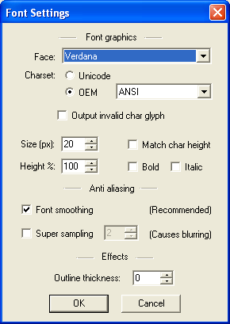
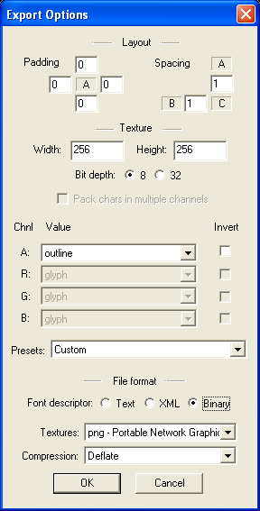
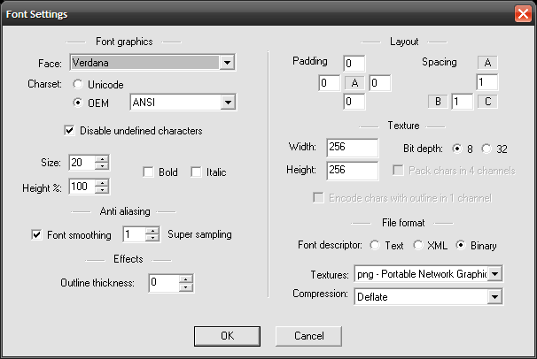
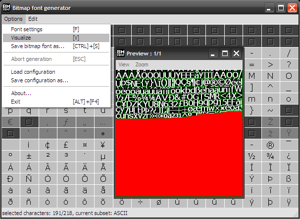
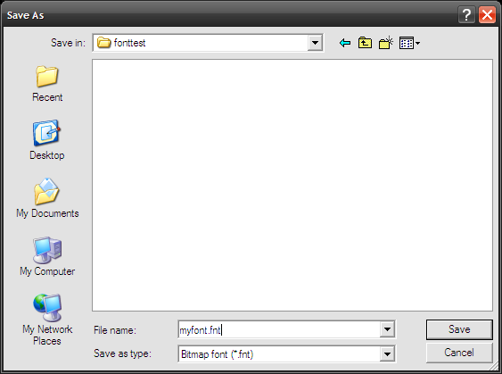
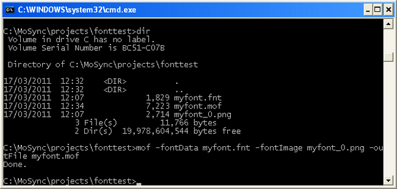

The MAUI::Font class draws text using bitmap fonts defined in a mof-file. In this guide we show how to convert a bitmap font to a mof-file, and how to add the file as a resource to a MoSync project. We then create a MAUI::Font instance and draw some text with it.
Note: An improved way of handling fonts for some platforms in MoSync was introduced in release 2.6. See our Developer Guide called Working With the Device Fonts API.
We will be using two tools in this tutorial:
BMFont is a bit map font generator that can render any existing truetype font as a bitmap font. This program is bundled with the MoSync SDK for Windows and can be found in the /bin/BMFont folder along with its documentation. (If you are using the MoSync SDK for OS X you will need to find your own font tool for creating a bitmap font, or use one of the bitmap fonts that are readily available for that platform.)
mof.exe is a command line tool that converts bitmap font files to mof format required by MAUI::Font. It can be found in the /bin folder.
First, create a new folder for the project called /fonttest in the MoSync /projects directory.
Now open the BMFont tool and configure its settings as follows:
For BMFont v1.12 and MoSync 2.5+:
 
For BMFont v1.9 and MoSync 2.4 and earlier:

Note that:
Select all the characters that you want to include in your font. (If you want all characters, use the Edit > (Un)Select All Chars command.)
Select Options > Visualize to see what your bitmap font will look like:

Next, select Options > Save bitmap font as and save your font to our /fonttest folder as a Bitmap font (*.fnt) file:

Convert the font using the MAUI font generator (mof.exe) from the Windows command line:

The MAUI font generator takes the following parameters:
Import the newly created .mof file into your project.
The resulting mof-file can be added to your MoSync project as a binary resource and passed to the constructor of MAUI::Font to create a runtime instance of the font.
To draw text using the font, use one of the methods drawString or drawBoundedString. The drawBoundedString method features linebreaking and is therefore slower, so it is recommended to use drawString when possible. We'll show this by making a simple example.
Start Eclipse and create a new project called fonttest. Make it a Moblet project. Also, in the project's build settings, add MAUI.lib to Additional Libraries.
Begin by adding a new resource file called res.lst with the contents:
.res R_FONT .bin .include "myfont.mof"
In the source file, add the following inclusions:
#include <MAUtil/Moblet> #include <MAUI/Font.h> #include <MAHeaders.h>
Font.h. is required for bitmap font handling. MAHeaders.h, which will be generated from the compiled resource file, contains the handles to the resources in the resource file.
In the code we will begin by adding an instance of MAUI::Font as a member to the Moblet. We will also make sure it is initialized with a handle to our font resource.
using namespace MAUtil;
class MyMoblet : public Moblet {
private:
MAUI::Font font;
public:
MyMoblet() : font(R_FONT) {
}
Finally we use the font to draw a text whenever the user presses a key.
void keyPressEvent(int keyCode) {
font.drawString("Hello world!", 2, 2);
maUpdateScreen();
}
void keyReleaseEvent(int keyCode) {
// todo: handle key releases
}
};
extern "C" int MAMain() {
Moblet::run(new MyMoblet());
return 0;
};